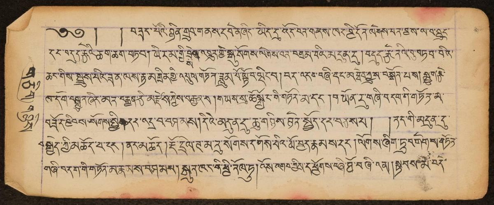

Can your model read Tibetan?
472 real pages, from illuminated manuscripts to typewriters. One score: character error rate.
Score to beat
Manuscripts

Transitional script
Woodblock prints
Leaderboard
No model matches.
The leaderboard didn’t load.
Join in three steps
-
Download the pages
load_dataset("BDRC/tibetan-ocr-benchmark") -
Run your model
Save one CSV with a row per page.
id,transcription -
Submit the CSV
A bot replies with your score in minutes.
Submit your model